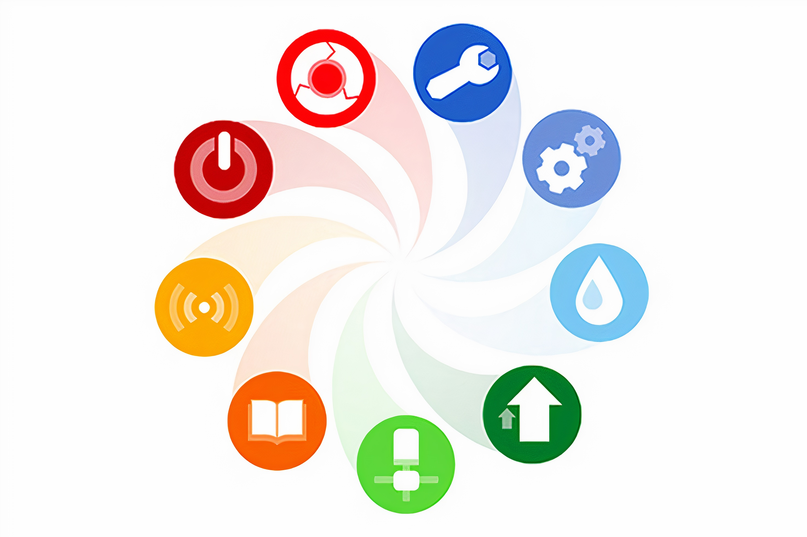

Banco de tiempo:

¿Qué es un banco de tiempo?
El Banco de Tiempo promueve intercambios de tiempo entre
usuarios mayores de edad (socios), que estén dados de alta en el sistema.
Ofrece la oportunidad de que la gente se conozca y confíe en los demás para resolver necesidades de la vida
diaria, de esta forma se intenta mejorar la calidad de vida de las personas y dinamizar la vida local
¿Qué se intercambia?
 Los bienes, productos, servicios o actividades que se pueden intercambiar dependen de la
imaginacion y
diversidad de experiencias de los socios y las socias del Banco del Tiempo.
Se caracterizan por estar vinculadas a la vida diaria. Algunos ejemplos pueden ser: acompañar a un paseo o
al médico, enseñar unos pasos de baile o una receta de cocina, ayuda en el hogar, cuidado puntual de niños,
plantas o animales, informática... En definitiva, cualquier actividad que alguién necesite o quiera ofrecer
Cómo participar
Para participar en el Banco del Tiempo primero debes estar asociado, para lo cual puedes registrarte en el siguiente formulario.